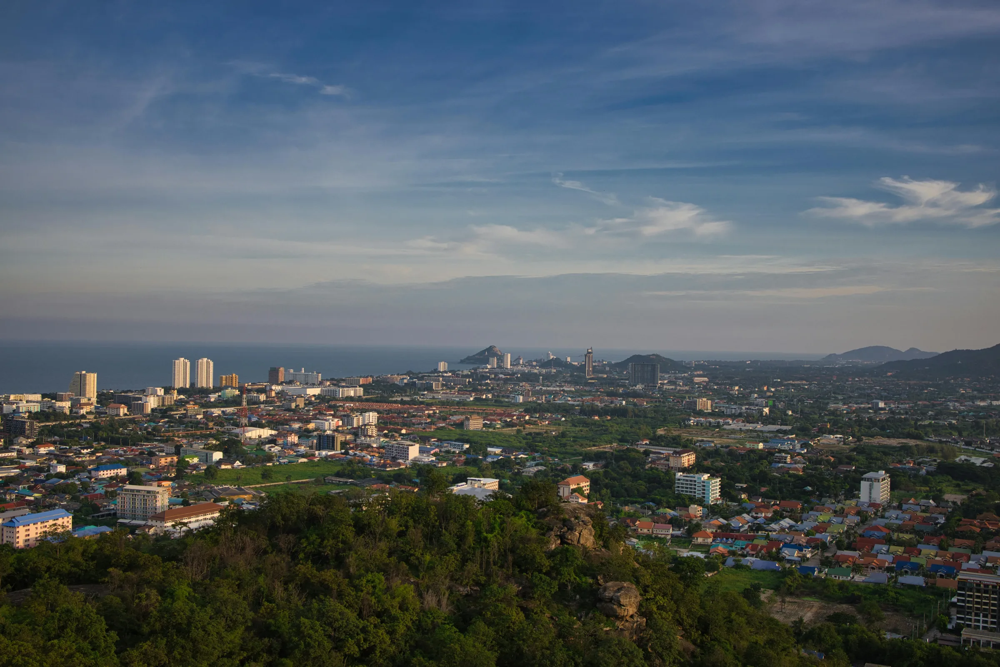
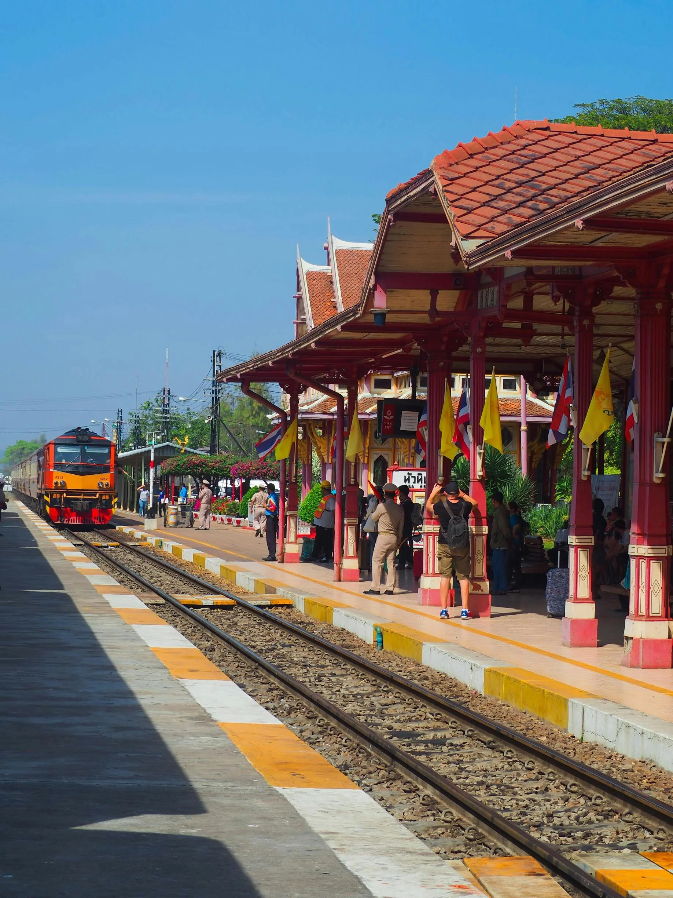
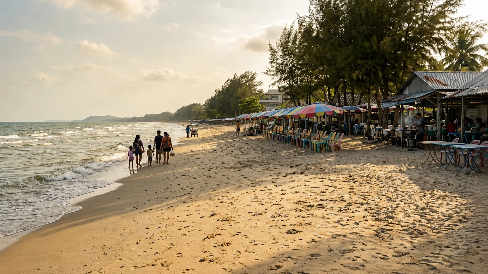

Retirees
Year-round tropical climate, international hospitals, an established French- and English-speaking community, a cost of living below European levels: Hua Hin is one of the most popular destinations to retire in Thailand.

200 km south of Bangkok, Hua Hin is Thailand's oldest seaside resort. Chosen as a summer residence by the Thai royal family in the 1920s, it has kept the quiet, residential character that sets it apart from the busier tourist destinations elsewhere in the country. Around 80,000 permanent residents, including 3,000–5,000 expats, along nearly 25 kilometres of coastline — from Khao Takiab to Pranburi.
Browse available properties
The centre concentrates the town's life: the historic railway station (1911), night markets, shops and most restaurants. It's also the densest area, with a mix of seafront condos, townhouses and newer developments. The best fit for buyers who want to live without a car and enjoy daily local life.
See properties in the centre5–10 minutes south of the centre, Khao Takiab takes its name from the 272-metre limestone hill that overlooks the beach, crowned with a Buddhist temple. The area has kept its fishing-village character despite two decades of seafront condo development. The beach here is quieter and wider than in town.
See properties in Khao TakiabAround 7 kilometres west of the centre, Hin Lek Fai sits on a plateau that culminates at the highest point in the province. The area is mostly residential and attracts buyers looking for hilltop villas, quiet and space. The Black Mountain Golf Club — one of Thailand's most highly rated courses — is also here.
See properties in Hin Lek Fai30 kilometres south of Hua Hin, Pranburi marks the shift to a wilder stretch of coast. The area is home to Pran Buri Forest Park and its mangroves, and gives access to Khao Sam Roi Yot National Park — the country's first coastal national park, 60 km further south. The beaches are long and uncrowded, and the market leans toward villas and eco-lodges rather than condos.
See properties in PranburiBlack Mountain refers both to the famous golf course (administratively located within Hin Lek Fai) and to the residential community that has grown around it. About 13 km from the centre, the area attracts international families: stand-alone houses in gated estates, international schools nearby, and quick access to the region's main golf courses.
See properties in Black Mountain
25 kilometres north of Hua Hin (in the neighbouring Phetchaburi province), Cha-Am has a very long beach and a more local feel, mostly visited by Thai families on weekends. Per-square-metre prices are noticeably lower than in Hua Hin, making it a relevant entry point for tighter budgets or for investors looking for rental yield.
See properties in Cha-AmNight markets, street food stalls, traditional Thai restaurants and international tables: Hua Hin combines everyday popular cooking with a more refined dining scene, anchored by the seafront hotels.
Two international private hospitals — Bangkok Hospital Hua Hin and San Paulo Hospital — offer multilingual staff and modern facilities. The town also has a wide choice of wellness centres and spas.
More than ten golf courses within a 30 km radius (Black Mountain, Banyan, Palm Hills, Springfield, Pineapple Valley…), well-regarded kitesurf spots, and the option to play polo, tennis or hike in the neighbouring national parks.
Hua Hin sits roughly 200 km south of Bangkok, accessible by highway, train or minivan. That proximity to the capital, combined with a year-round tropical climate, makes it one of the most practical choices for a primary residence, second home or rental investment in Thailand.
Year-round tropical climate, international hospitals, an established French- and English-speaking community, a cost of living below European levels: Hua Hin is one of the most popular destinations to retire in Thailand.
The Hua Hin real-estate market is more stable than the tourist islands, with rental demand sustained by Bangkok weekenders. Typical observed yield: 4–6% gross depending on the neighborhood and property type.
International schools (British and IB curricula), activities for children (Vana Nava waterpark, beaches, water sports) and a safe environment: several gated communities offer a setting well-suited to family relocation.
2.5 hours from Bangkok by highway, Hua Hin is particularly well-suited to occasional use. Daily flights to Bangkok from Europe (via Doha, Dubai or Singapore), then road or train down to Hua Hin.
Whether you're after a seafront condo, a hilltop villa or a family home in a gated estate, we walk you through every step — in French or English — from first contact to handover, and beyond (visa, relocation, property management).
📞 +66 81 298 4688 💬 WhatsApp ✉️ smartview.realestate@gmail.com